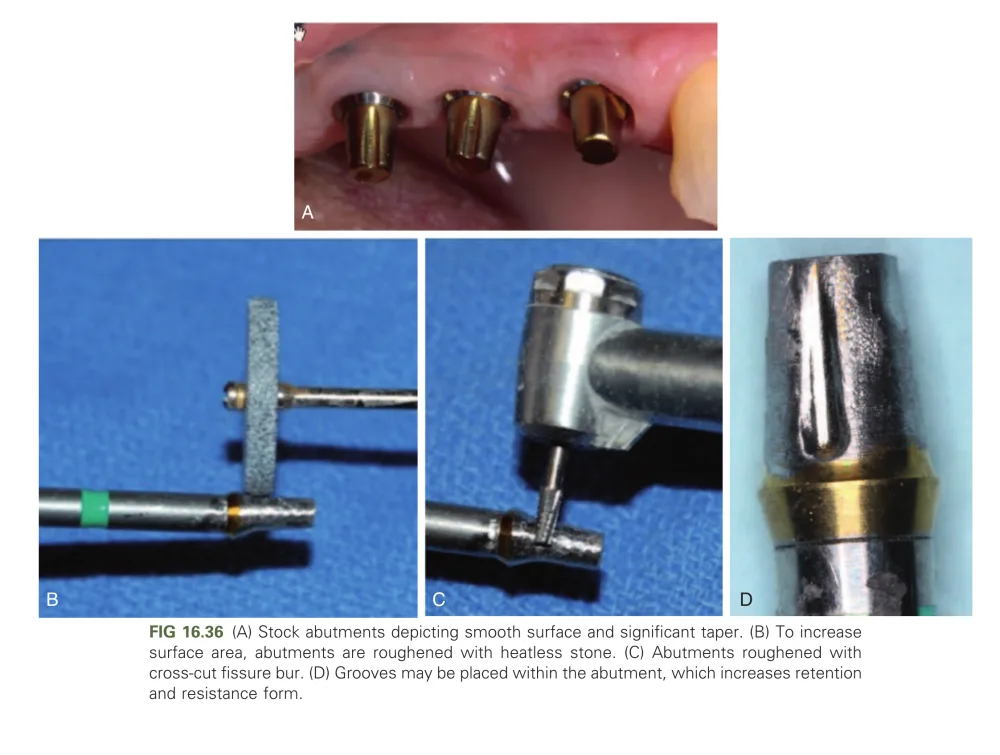
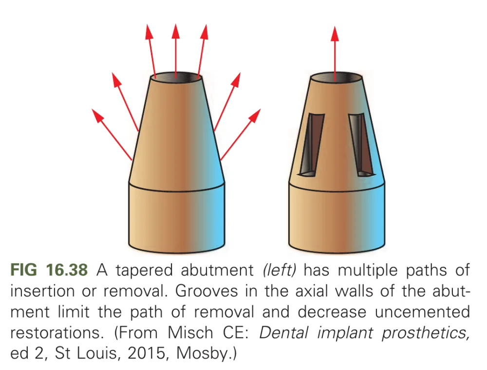

نسخه استخراجشده؛ ترجمه یا تأیید علمی انجام نشده است. وضعیت: captured
سطح اباتمنت، دومین اهرم است. پارامترهای گیر برای دندان و ایمپلنت مشابهاند و عمدتاً از قطر و ارتفاع اباتمنت اثر میپذیرند.
و یافتهی مطالعات: «یک افزایش خطی در گیر با افزایش قطر برای تراشهایی با ارتفاع یکسان رخ میدهد، و یک اباتمنت پهنتر گیر بیشتری از اباتمنت باریکتر فراهم میکند.»
و اکنون مقایسهای که مقیاس مسئله را نشان میدهد: «قطر یک اباتمنت ایمپلنت برای گیر سمان اغلب کمتر از ۵ میلیمتر است (ناحیهی خلفی)، که قابل مقایسه با یک انسیزور لترال تراشخورده است. سطح کاهشیافته به گیر ضعیفتر از اکثر اباتمنتهای طبیعی میانجامد.»
این تصویر را نگه دار: در ناحیهی مولر — جایی که بیشترین نیرو وارد میشود — سطح گیرندهای در اختیار داری که به اندازهی یک لترال است. بیشترین بار روی کمترین سطح.
و دو راه پهنتر کردن اباتمنت:
و سه مزیت اباتمنت با قطر بیشتر: تیپر بیشتری فراهم میکند، دیوارهی بیرونی ضخیمتر، و سطح بیشتری برای گیر.
و اکنون سومین اهرم — زبری سطح، با دو عدد مشخص:
«زبری سطح اباتمنت با ایجاد بینظمیهای میکروگیرنده که عامل چسباننده در آنها نفوذ میکند، گیر ترمیم را افزایش میدهد.» و این به بافت سطح، نوع فرزهای بهکاررفته، و نوع و ضخامت عامل چسباننده بستگی دارد.
به این تفکیک دقت کن: یکی سطح بیرونی اباتمنت را زبر میکند و دیگری سطح درونی تاج را. هر دو سوی رابط سمان قابل بهبودند.
و ابزارهای لازم (شکل ۱۶٫۳۶): سطح اباتمنتهای استاندارد باید با فرز الماسی، کارباید فیشور کراسکات، یا سنگ هیتلس اصلاح شود. این کار گیر مکانیکی برای سمانکاری را هم افزایش میدهد.
و همان شکل یک چهارمی هم دارد: شیارها را میتوان درون اباتمنت گذاشت، که گیر و فرم مقاومت را افزایش میدهد — و این ما را به اهرم بعدی میبرد.

چهارمین اهرم — ارتفاع اباتمنت. و دو عدد دقیق:
سه میلیمتر، حدود دو سوم افزایش گیر. و گاهی هزینهاش تنها انتخاب یک اباتمنت بلندتر است.
و یک قاعدهی تصمیم که مرز دو راهبرد را میکشد:
«وقتی ارتفاع اباتمنت ایمپلنت کمتر از ۵ میلیمتر است، قطر اباتمنت برای بهبود گیر یا مقاومت سمان بحرانیتر میشود. در این موارد، ممکن است یک اباتمنت اختصاصی با قطر بزرگتر از اباتمنت استاندارد برای نگه داشتن ترمیم لازم باشد.»
یعنی زیر ۵ میلیمتر، اهرم اصلی از ارتفاع به قطر منتقل میشود. این یک قاعدهی عملی است: نخست ارتفاع را بسنج؛ اگر زیر ۵ بود، به قطر فکر کن.
و چرا ارتفاع بیشتر فقط سطح نمیدهد: «ارتفاع افزوده نهتنها سطح را زیاد میکند بلکه به فرم گیر و مقاومت افزوده هم میرسد. دیوارههای اگزیال بلندتر اجازه میدهند نیروی بیشتری فشاری و کششی باشد، بهجای تنش برشی آسیبرسان.»
این جمله کلید کل درس است: ارتفاع، نوع نیرو را عوض میکند نه فقط مقدار سطح را. و از یونیتهای پیش میدانی که رابط سمان در برابر برش ضعیفترین است.
و پنجمین اهرم — هندسهی اباتمنت:
«اباتمنتهای ایمپلنت ساخت کارخانه برای سمان معمولاً در مقطع دایرهای هستند، که مقاومت اندکی در برابر نیروهای برشی فراهم میکند — بهویژه در تاجهای منفرد و بدون اسپلینت.»
و یک نکتهی ظریف دربارهی اینکه کدام سطح مهمتر است: «سطح یک اباتمنت که در معرض نیروهای برشی است، بحرانیتر از کل سطح تحت نیروی کششی است. استحکام رابط سمان زیر مؤلفهی برشی نیرو ضعیفترین است.»
و راهحل ساده: «یک سطح تخت روی تراش اباتمنت ایمپلنت، نیروهای برشی را بر رابط سمان کاهش میدهد. هرگاه ممکن باشد، باید یک یا دو سطح تخت روی اباتمنتهای دایرهای برای پروتزهای سمانی ساخته شود.»
و اکنون قدرتمندترین ابزار این درس — شیار (شکل ۱۶٫۳۸):
«یک پست اباتمنت ایمپلنت تیپر ممکن است چند مسیر جاگذاری یا خروج فراهم کند. افزودن یک یا چند شیار با دیوارههای موازی به اباتمنت، مسیر خروج تاج را به یک جهت محدود میکند.»
این تفاوت ماهوی شیار با بقیهی اهرمهاست: تیپر و سطح و ارتفاع، گیر را بیشتر میکنند؛ شیار مسیرهای فرار را حذف میکند. یک اباتمنت تیپر بیشیار، چند مسیر خروج دارد؛ با شیار، فقط یکی.
و سه اثر مکانیکی شیار: «شیارهای افزودهی موازی با مسیر جاگذاری بهطور مکانیکی در برابر نیروهای چرخشی مقاومت میکنند، نیروهای فشاری بر سمان در آن نواحی میگذارند، و سمانکاری را بهطور چشمگیری بهبود میدهند.»
و یک هشدار ساختاری که نباید نادیده گرفت: «باید در دیوارههای بیرونی اباتمنتهای دوتکه احتیاط شود. این اباتمنتها به احتمال زیاد دیوارههای نازکی دارند، و یک شیار ممکن است اباتمنت را سوراخ یا تضعیف کند.»
پس شیار رایگان نیست: در اباتمنت یکتکهی ضخیم، یک ابزار عالی است؛ در اباتمنت دوتکهی نازک، میتواند خودش عارضه بسازد. پیش از شیار زدن، ضخامت دیواره را بشناس.
